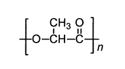
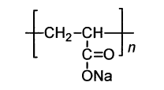
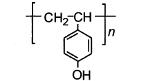
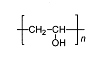
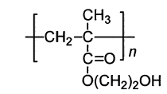

令和元年度 問18 高分子化学
化学式A～Eで表される高分子材料に関する説明のうち、不適切なものの組み合わせはどれか。
| A |  | 酵素又は非酵素的加水分解反応によりモノマー単位まで 分解されるため、生分解性プラスチックとして知られている。 |
| B |  | 水と強く相互作用するため、これを三次元的に架橋した材料は高吸水性高分子として利用されている。 |
| C |  | フェノールとホルムアルデヒドから得られる熱硬化性樹脂であり、電気絶縁材料として利用されている。 |
| D |  | 対候性に優れ、電気絶縁性と自己消火性があるため、電線被覆材料として利用されている。 |
| E |  | 透明性に優れ、水で膨潤する分子構造を持つため、ソフトコンタクトレンズの材料として用いられる。 |
①
AとB
②
AとD
③
BとC
④
CとD
⑤
DとE
正答
④ CとD
Aはポリ乳酸（PLA：Poly Lactic Acid）です。人体への安全性も高く生分解性プラスチックとしての特性もあります。
Bはポリアクリル酸ナトリウムです。モノマーであるアクリル酸ナトリウムと架橋性モノマーおよびアクリル酸が共重合することで高吸水性高分子(SAP)として使用されます。
Cはポリ（4-ビニルフェノール）です。ポリ（p−ビニルフェノール）とも呼ばれます。問題にあるフェノールとホルムアルデヒドから得られる樹脂はノボラック樹脂もしくはフェノール樹脂を表しています。ノボラック樹脂はフォトレジストとして使用されており、ポリ（4-ビニルフェノール）はその代替品です。
Dはポリビニルアルコール（PVA、ポバールとも呼ぶ）です。親水性を活かした乳化分散剤や繊維加工剤として用いられます。問題にある「対候性に優れ、電気絶縁性と自己消火性があるため、電線被覆材料として利用されている。」という解説はポリ塩化ビニルが該当します。
Eはポリヒドロキシエチルメタクリレートです。ポリメタクリル酸ヒドロキシエチルとも呼ばれます。ハイドロゲル素材として使用できるためソフトコンタクトレンズの材料になります。